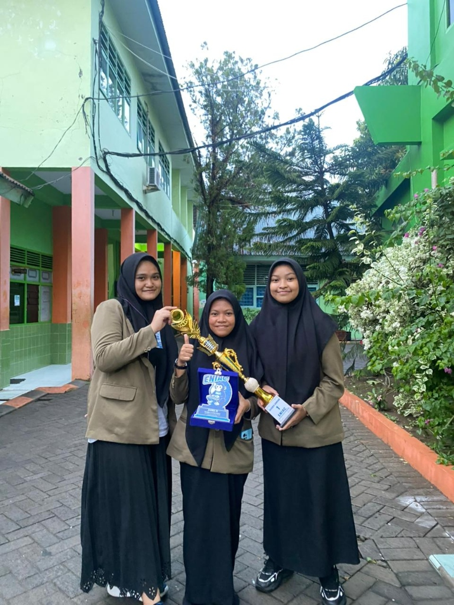
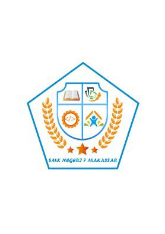

Biodata Diri
| Nama: | Rezky Awalya |
| Prodi: | Teknik Komputer |
| Jurusan: | JTIK UNM |
| Jenjang: | S1 (Semester 3) |
| Domisili: | Makassar, Sulsel |
Daftar Isi Halaman
- • 🎓 Riwayat Pendidikan
- • 🏆 Prestasi & Penghargaan
- • 👥 Pengalaman Organisasi
- • 🎨 Portofolio Proyek Desain
Minat & Fokus
• Rekayasa Sistem Komputer
• UI/UX & Graphic Design
• Pemrograman C++, PHP & Web
• Public Speaking & Debat
🎓 Riwayat Pendidikan
Rekam jejak jenjang pendidikan formal yang telah saya tempuh dari tahun 2011 hingga berkuliah di UNM:
-
2025 — SekarangUniversitas Negeri Makassar (UNM)
Jurusan: Teknik Informatika & Komputer (JTIK)
Program Studi: S1 Teknik Komputer (Semester 3) -
2022 — 2025SMK Negeri 7 Makassar
Sekolah Menengah Kejuruan (SMK) — Rekayasa Perangkat Lunak (RPL)
-
2020 — 2022SMP Negeri 10 Makassar
Sekolah Menengah Pertama (SMP)
-
2019 — 2020Pondok Pesantren Nahdlatul Ulum, Maros
Madrasah Tsanawiyah (MTs)
-
2014 — 2019SD Negeri 67/1 Rappokalling
Sekolah Dasar (SD)
-
2013 — 2014SD Negeri Pontiku 1
Sekolah Dasar (SD)
-
2011 — 2013TK Tunas Muda, Rappokalling
Taman Kanak-Kanak (TK)
🏆 Prestasi & Penghargaan
Daftar pencapaian kompetisi akademik, sains matematika, debat, dan desain grafis yang berhasil diraih:
Juara 3 Lomba Debat
Tahun 2023Kategori: Kompetisi Debat & Public Speaking (ENIAC)

Berhasil meraih Juara 3 Lomba Debat tahun 2023 pada kompetisi ENIAC. Mengasah kemampuan berpikir kritis (*critical thinking*), seni retorika, penyusunan argumen berbasis data, dan kolaborasi tim.
Juara 3 Lomba Desain Logo
Tahun 2022Kategori: Desain Grafis & Branding Identitas Sekolah
Meraih Juara 3 dalam lomba desain logo dengan merancang lambang identitas institusi yang sarat makna filosofis, memadukan elemen teknologi pemrograman, pendidikan, dan sinergi industri.
Juara 1 Lomba Cerdas Cermat Matematika
Tahun 2022Kategori: Kompetisi Sains & Matematika

Meraih predikat Juara 1 dalam ajang Cerdas Cermat Matematika tahun 2022, membuktikan kecepatan kalkulasi, ketepatan logika kuantitatif, dan ketelitian pemecahan masalah.
👥 Pengalaman Organisasi & Kepemimpinan
Pengalaman kepemimpinan formal dan pembentukan karakter kerjasama:
Sekretaris Umum OSIS
2024 — 2025OSIS SMK Negeri 7 Makassar

Menjabat sebagai Sekretaris Umum OSIS periode 2024—2025. Mengatur surat-menyurat resmi, menyusun proposal dan laporan pertanggungjawaban kegiatan, memimpin notulensi rapat koordinasi pengurus, serta sukses menyelenggarakan pesta demokrasi sekolah (Pemilihan Ketua OSIS).
Anggota Gerakan Pramuka
Tahun 2020Aktif dalam kegiatan kepramukaan, pembinaan kedisiplinan mental, ketangguhan fisik, kemandirian beregu, dan pengabdian sosial.
💻 Portofolio Proyek Pengembangan & Desain
Koleksi proyek pengembangan perangkat lunak (software engineering), desain grafis vektor, dan perancangan UI/UX:
💻 Aplikasi Kasir (Point of Sale) — Projek UKK
Projek UKK RPLUji Kompetensi Keahlian (UKK) Rekayasa Perangkat Lunak — SMK Negeri 7 Makassar
Aplikasi web sistem kasir (Point of Sale) yang dibangun untuk memenuhi tugas akhir Uji Kompetensi Keahlian (UKK). Dilengkapi sistem autentikasi multi-level (Administrator dan Petugas Kasir), pengelolaan data barang dan stok produk, pencatatan transaksi kasir secara real-time, perhitungan kembalian otomatis, serta rekapitulasi laporan transaksi penjualan.
RezkyAwalya/projekKasir
Desain Logo SMK Negeri 7 Makassar
Branding LogoKarya Juara 3 Lomba Desain Logo (2022)

Desain logo berbentuk perisai segilima yang merepresentasikan sinergi teknologi informasi & coding, ilmu pengetahuan, pertanian/kemakmuran, dan karakter generasi muda berprestasi.
Desain Brosur Jurusan RPL (CorelDRAW)
CorelDRAWDesain Pertama Grafis Vektor — SMK Negeri 7 Makassar

Brosur lipat tiga yang dirancang menggunakan software CorelDRAW, menyajikan profil profesi software engineering, prospek karir, dan dokumentasi kebersamaan kelas.
UI/UX Design Pinterest Mobile (Figma)
Figma UI/UXDesain Pertama Antarmuka Aplikasi Mobile

Proyek UI/UX mobile pertama menggunakan Figma, memfokuskan tata letak input form yang bersih, kontras warna yang nyaman, serta hierarki tipografi yang jelas.